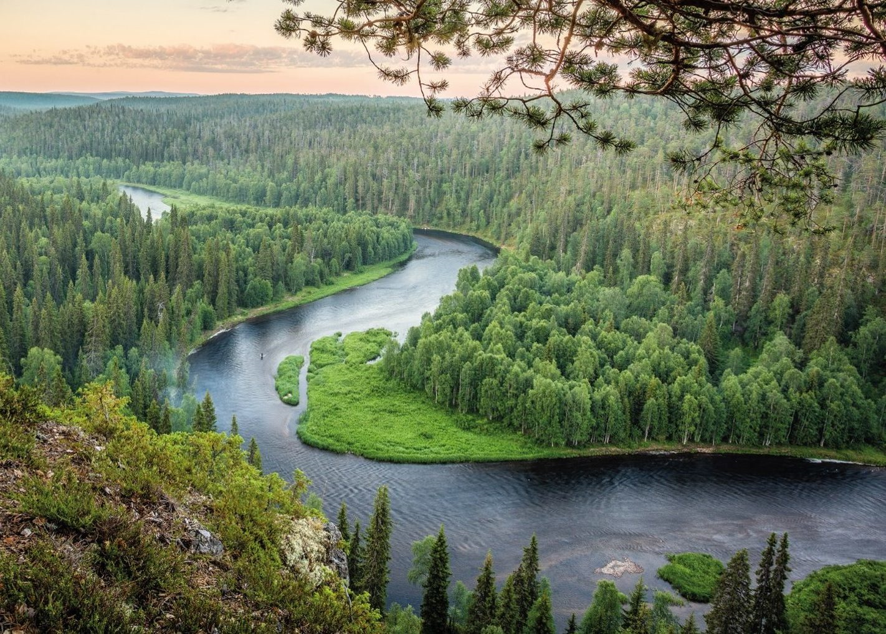
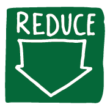
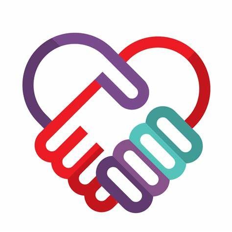
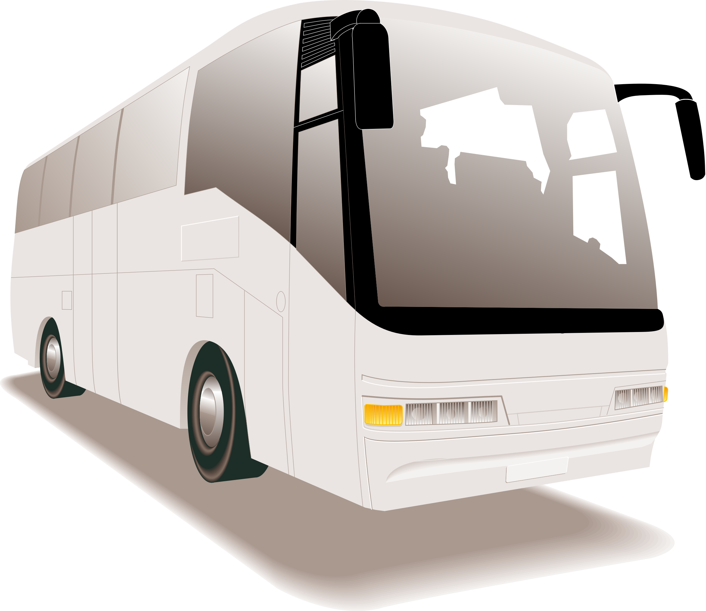

Websites about Protected Areas Issues
Land pollution is getting serious nowadays and this results from human activities such as agriculture, mining and landfilling. According to International Union for Conservation of Nature (IUCN), more than 30% of all land is degraded or degrading, which harms the ecosystem.1 To protect our planet and safeguard the nature, we should all act now to introduce sustainable development and set up protected areas.More information and strategies can be found in the following websites:
- Protected Areas and Land Use - IUCN
- Human Activities and their Potential Impact on the Environment - Office of the Auditor General of Canada
- Improving Protected Area Networks - WWF
- Protected Area - Canadian Parks and Wilderness Society
- To Fight Deforestation, One Country Changed the Equation - Conservation International
- Protected Planet and the World Database on Protected Areas - United Nations Environment Programme
What can you do as an individual?
❝ If we don❜t have a place for nature in our heart, how can we expect nature to have a place for us.❞ 2
-  Reduce your waste
 Recycle
Recycle-  Volunteer
-  Take public transport
Some genuis ways to resue old stuff!! Let's watch this video:
©Copyright Tsam Wong, COMP 213 - Fall 2022
1 IUCN (2022). Protected areas and land use. https://www.iucn.org/our-work/protected-areas-and-land-use
2 Abhijit Naskar (2021). When Veins Ignite: Either Integration or Degradation.